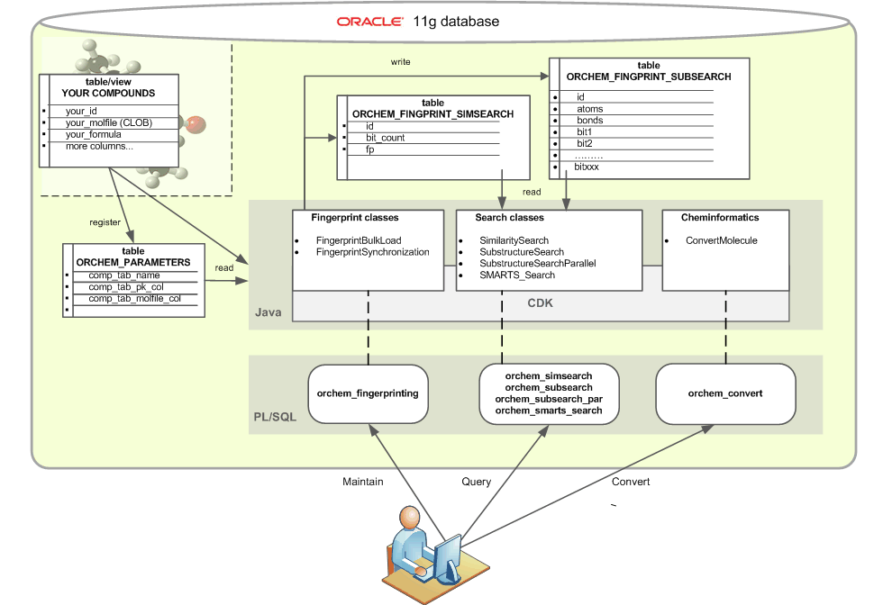

IntroductionThis page describes OrChem, an Oracle chemistry plug-in using the Chemistry Development Kit (CDK). The CDK is an open source Java library for Chemoinformatics and Bioinformatics. OrChem originated in the chemoinformatics and metabolism team of the European Bioinformatics Institute.Oracle Data cartridges extend the capabilities of the Oracle server. For chemistry various commercial cartridges exist that facilitate searching and analyzing chemical data. OrChem also provides functionality like this, but is not a cartridge. It doesn't need Oracle's extensibility architecture because its Java components run as Java stored procedures inside the Oracle standard JVM (Aurora). OrChem is suitable for Oracle 11G and onwards. Starting with Oracle 11g release 1 (11.1) there is a just-in-time(JIT) compiler for Oracle JVM environment. A JIT compiler for Oracle JVM enables much faster execution because it manages the invalidation, recompilation, and storage of code without an external mechanism. This new Oracle feature makes it possible to run Java 1.5 classes as well performing Java stored procedures, whereas with earlier Oracle versions performance would have been weaker.
This library is free software; you can redistribute it and/or
modify it under the terms of the GNU Lesser General Public
License as published by the Free Software Foundation; either
version 2.1 of the License, or (at your option) any later version.
This software is distributed in the hope that it will be useful,
but WITHOUT ANY WARRANTY; without even the implied warranty of
MERCHANTABILITY or FITNESS FOR A PARTICULAR PURPOSE. See the GNU
Lesser General Public License for more details.
Copyright (C) 2008,2009 EMBL/EBI.
|
OverviewThe picture above shows the main components of OrChem in yellow. Shown left in gray is the user's table with chemical compounds. This table or view must have a single primary key column and an (MDL) molfile Clob. The id and molfile column are mandatory for OrChem to work (additional compound storage types will be added). During OrChem installation the table ORCHEM_PARAMETERS is populated; this one-row table stores the name of user's compound table and its primary key column. Before OrChem can be used to search the compound table, a Java stored procedure (package "orchem_fingerprinting") needs to run to populate tables that support similarity and substructure searching. The fingerprinting procedure reads the entire content of user's compound table, and for each compound creates a CDK molecule and fingerprints it. The time it takes for this procedure to complete depends on the size of the compound table and the complexity of the compounds. The procedure can/should be parallelized, for instance by using DBMS_JOB. The two shown tables ORCHEM_FINGPRINT_SIMSEARCH and ORCHEM_FINGPRINT_SUBSEARCH are the target for the fingerprinting procedure:
You can of course opt out of the OrChem search implementations. Instead, you could only install the Java libraries in a database schema and so have the CDK at your disposal inside Oracle. You can build Java stored procedure wrappers around CDK class methods of your particular interest. This is a relatively straightforward process, and once in place the rich functionality of the CDK is available to all SQL and PL/SQL in your database applications. Author: mark_rynbeek@users.sourceforge.net |